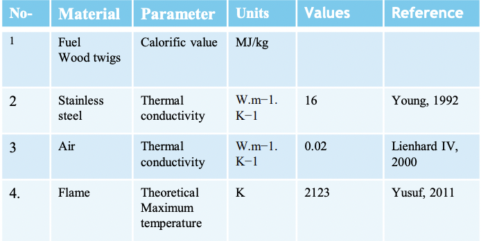
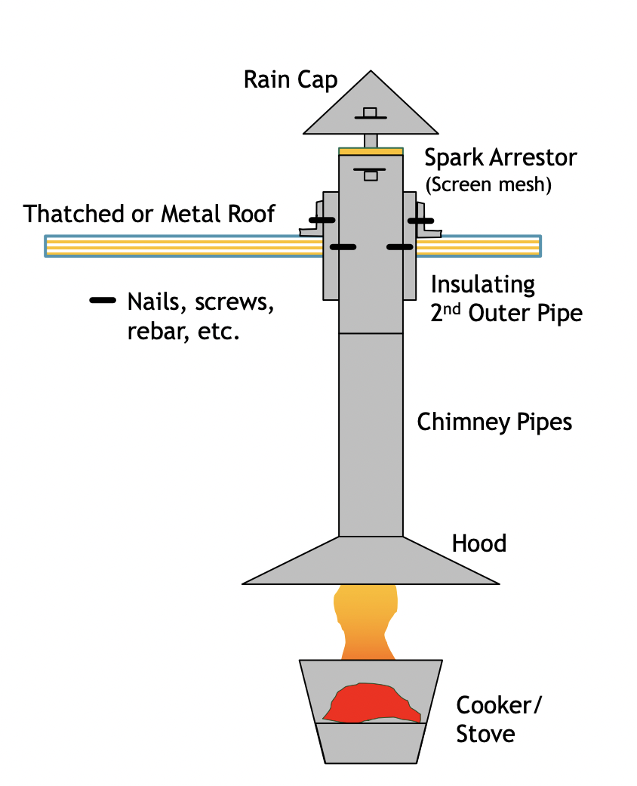
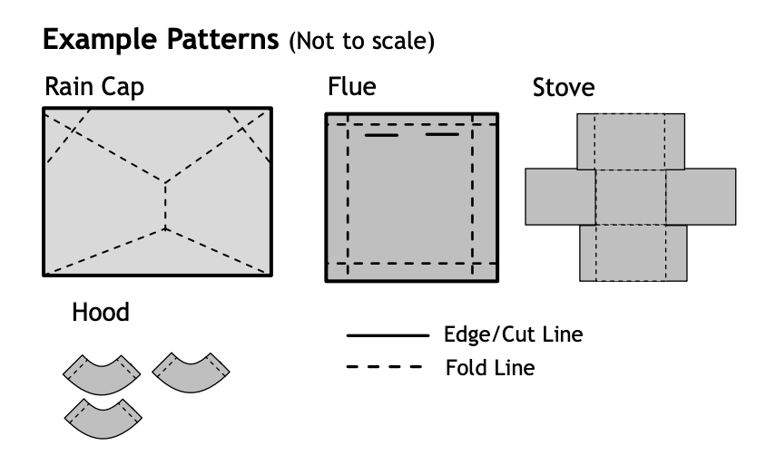
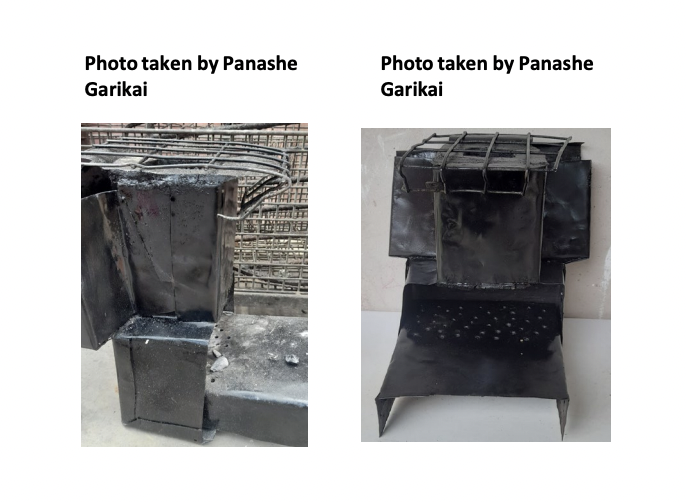

Design
Procedure followed to design and construct the cooking Stove
Thermal design assumption of the cooking stove

- Test the performance of designs based on the experience of Zimbabwe
residents who cook inside of their dwellings without proper ventilation
and suffer from IAP.
- One square meter of discarded sheet metal 1mm thick was used to create
several different units.
- The metal sheet was marked using some chalk to create fold lines and cut
lines.
- The marked shapes were cut using sheet metal snips. The shapes were
joining by folding the edges of the two-dimensional shapes to form threedimensional shapes.
Note: Pop rivets were used for speed, but the shapes can all be assembled using folded tabs.
Design of Combustion Chamber:
The combustion chamber is designed in a
rectangular prism shape. In the combustion chamber fuel (wood pieces) are
combusted. It was observed that inner chamber became red hot. To reduce
the heat losses from inner chamber, a jacket of coarse sand and heat
resistance refractory material was added (Fire Clay). As shown in the figure
below.

The Clean Cooking System has two components:
- Stove “Cooker” to burn fuel more efficiently and
reduce emitted smoke.
- Chimney and hood, to eliminate fumes from
dwelling. The chimney is isolated from the roof
by a 2nd outer pipe. Nails are used to isolate the
chimney pipe from the insulating pipe and the roof.

